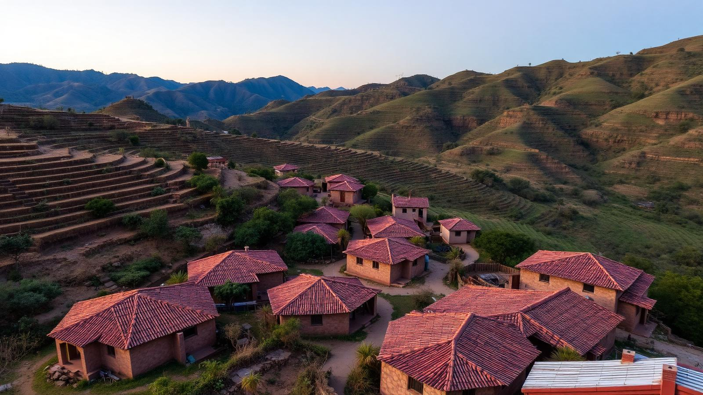
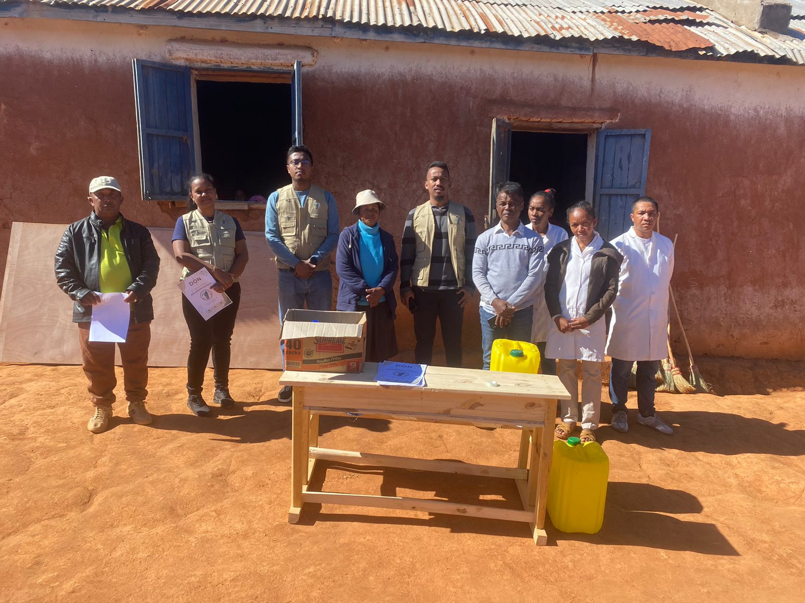

Association
Qui sommes-nous
Une organisation malgache, ancrée localement
L'Association Anjaramahasoa est engagée dans le développement communautaire rural à Madagascar.
Notre mission : offrir aux enfants des zones enclavées un accès à une éducation de qualité à travers l'amélioration des infrastructures scolaires, l'électrification, l'eau potable et l'assainissement. Nous travaillons en étroite collaboration avec les communautés, les parents et les autorités locales.
« Part du Bien Commun »

Mission
Améliorer durablement les conditions de vie rurales.
Vision
Des communautés autonomes, instruites et en bonne santé.
Valeurs
Engagement, transparence, proximité et durabilité.
Méthode
Co-construction avec les parents et les autorités.